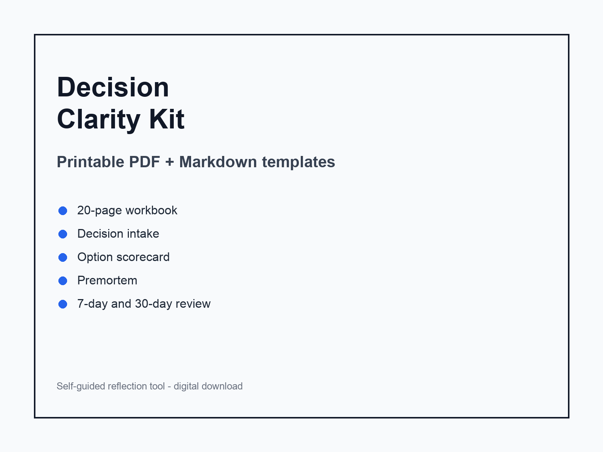
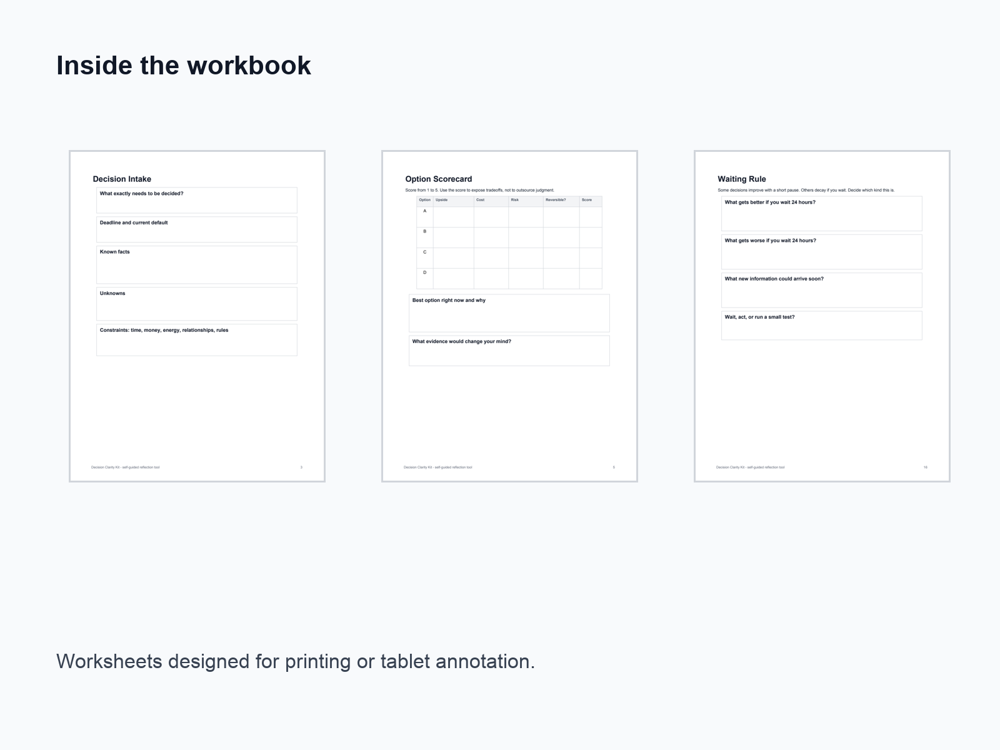
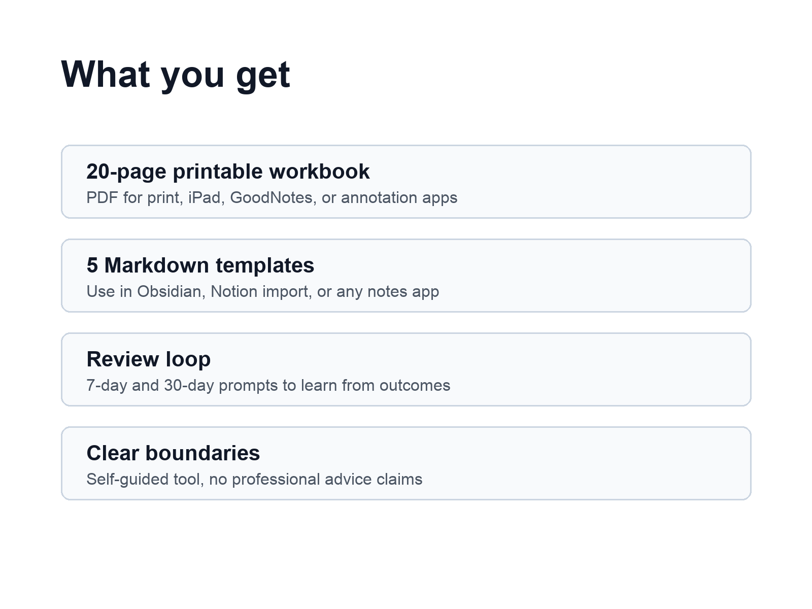
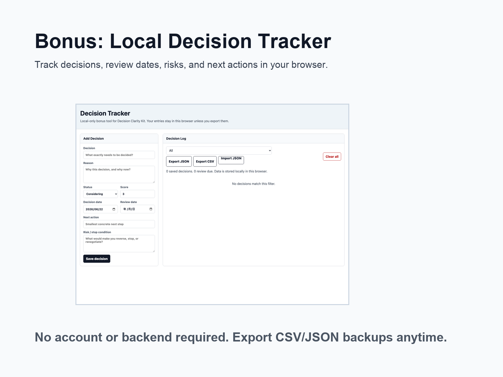

Printable PDF + Markdown templates
Decision Clarity Kit
Turn a vague, stressful choice into a written decision, one next action, and a review date before hindsight rewrites the story.

For decisions that keep looping
Use the workbook when you need to separate facts, unknowns, options, risk, communication, and follow-through without pretending the answer is certain.
- Decision intake worksheet
- Option scorecard
- Premortem and risk pages
- Action bridge
- 7-day and 30-day reviews
- Filled example decision record
- Local browser tracker
Inside the kit


What you get
A 20-page printable workbook, 5 Markdown templates, a filled example decision record, and a local tracker. The structure is simple enough for a 10-minute reset and complete enough for major decisions.
Open the free one-page sampleBonus tracker

Filled example included

Decision resources
Want the full kit when checkout opens?
The paid checkout is being prepared. Leave a purchase request if you want the full workbook, Markdown templates, filled examples, and local tracker.
Make the decision visible
Write down what you know, what you do not know, what could fail, and what you will do next. Use the included example when you are not sure how much detail is enough.
Download the free sample ZIPSelf-guided reflection only. Not financial, legal, medical, therapy, or mental health advice.